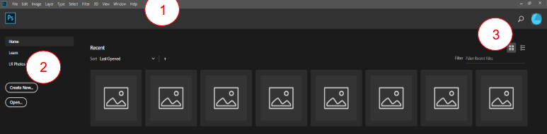
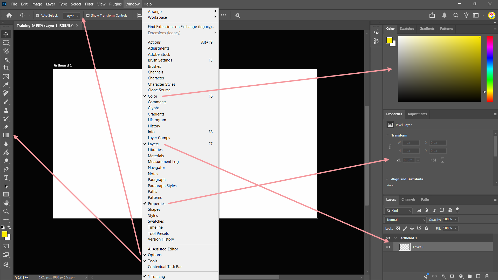

Adobe Photoshop
Adobe Photoshop is a raster graphics editor used for photo editing, image composition and digital art.
Find below the resources for our Photoshop sessions.
Course objectives
By the end of this workshop, you will be able to:
- create a Photoshop project
- select and edit image content
- work with layers
- transform and position objects
- save an editable Photoshop file
- export an image for use online.
Getting Started
Exercise 1: Open Photoshop
- Select the Windows Start button.
- Search for and open Adobe Photoshop.
Home Screen
- Menu bar
- Navigation Pane
- Home: Recent Files
- Learn: Tutorials for using Photoshop
- View options – Thumbnails or List

Creating new documents
Exercise 2: Create a document
- In the navigation pane, select New file.
- In the New Document window, select Web, then choose Web Large.
Web Large is suitable for screen-based work. It provides enough resolution to edit the image and reduce its dimensions later when preparing it for a website.
- In the Preset Details pane, enter a filename such as
Training. - Confirm that Colour Mode is set to RGB Color.
- Keep the remaining default settings.
- Select Create.
File formats
Photoshop workflows commonly use three types of files:
- Original source files: Untouched photographs or images. JPEG is common on mobile devices. Digital cameras and some higher-end mobile devices can also capture RAW files. RAW extensions vary by manufacturer;
.dngis Adobe’s RAW format. - Working files: Layered, editable files, usually saved as Photoshop documents (
.psd). - Output files: Finished images exported for use elsewhere, commonly as
.jpgor.pngfiles.
Bit depth and colour modes
Digital images are made up of pixels. Bit depth describes how much colour information is available for each pixel.
- A bit depth of 1 produces a black-and-white image.
- A bit depth of 8 supports up to 256 tonal values per channel and is suitable for most web images.
- A bit depth of 16 supports up to 65,536 tonal values per channel. It produces larger files but preserves more image information during editing.
The Main Screen

- The main workspace opens with several panels and panel groups.
- Open a panel group’s menu in its upper-right corner to view its options. For example, open the Color panel menu and select Color Wheel.
- To remove a panel group that you do not need, open its menu and select Close Tab Group.
- To reopen a panel, select it from the Window menu. For example, select Window > Properties.
- Hover over a tool in the Tools panel to display its rich tooltip.
To turn off rich tooltips:
- Select Edit > Preferences > Tools.
- Clear Show Rich Tooltips.
When you select a tool, the Options bar at the top of the workspace changes to display settings for that tool. For example, selecting the Quick Selection tool displays the Quick Selection options.
To search Photoshop help, select the magnifying-glass icon in the upper-right corner or press Ctrl + F.